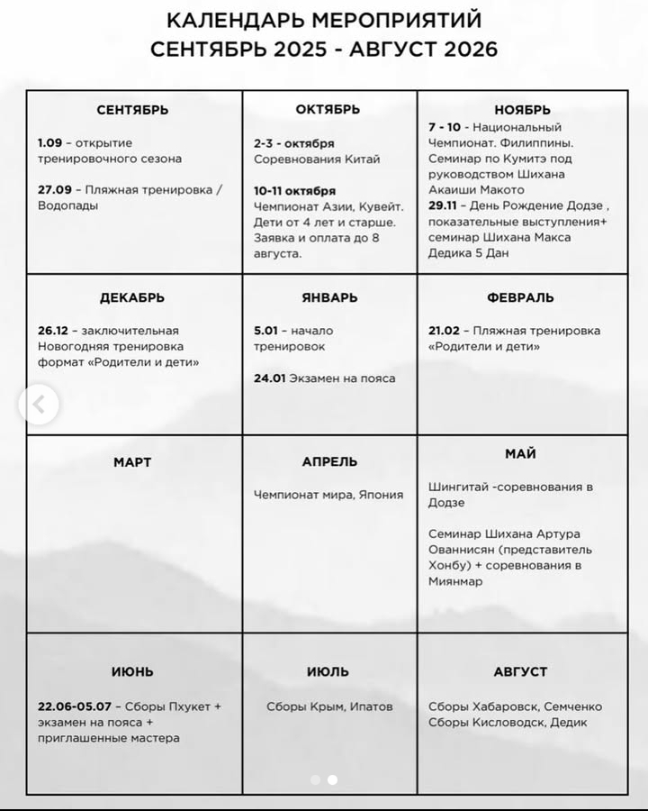

Неделя 2
Домашние тренировки в игровой форме не только помогут сохранить форму, но и воспитают дисциплину, привычку к регулярным физическим нагрузкам. Главная цель — освоить правильную технику выполнения. Наибольшая польза будет от работы над ошибками - учиться правильно делать упражнения, которые не получаются.
Тренировка длится примерно 30 минут, следует делать 6 таких тренировок в неделю, 1 день выходной. Полезно вести дневник или чек-лист, в котором на каждый день записывается список упражнений и галочкой отмечается их выполнение или невыполнение, главный критерий - правильность техники выполнения. Или сразу записывать в общую таблицу. В конце каждой недели по итогам можно выдать небольшой приз или похвалу.
Для упражнений В и Г группы каждый день ребёнок тянет жребий. Необходимо выполнить любые 5 из 6 упражнений, жребием исключается одно упражнение. Для этого можно использовать игральный кубик (кости) или нарезать шесть бумажек с номерами от 1 до 6 и давать вытягивать.
ПЛАН ТРЕНИРОВКИ
А. Тренировка начинается лёгким прыжковым упражнением. Продолжительность 1 минута: скакалка или петрушка. Можно чередовать через день, или делать только петрушку, если нет скакалки.
Скакалка
- Ровный постоянный темп
Петрушка
- Стараться делать размашистей и интенсивней
Б. Комплекс из четырёх упражнений, каждое упражнение выполняется 20 раз:
Отжимания на кулаках
- Руки в сильно сжатых кулаках, упор на указательном и среднем пальцах
- Локти вдоль корпуса назад, не в стороны
- Тело - прямая линия во всё время выполнения упражнения
Подъём туловища из положения лёжа
- Руки в замке за головой
- Скручивание корпуса до касания коленей локтями
- Стопы не двигаются
Приседания
- Руки в замке за головой
- Спина ровная
- Стопы полностью на земле
Прогиб в спине
- Руки и ноги поднимаются как можно выше
- Плавный подъём - плавное опускание
- Ноги не сгибаются в коленях
В. Комплекс из пяти любых упражнений из списка, каждое упражнение выполняется 10 раз:
- Выпады х10 на каждую ногу
- Супермен х10 на каждую сторону
- Выпрыгивания вперёд-вверх х10
- Прыжки на одной ноге х10 на каждую ногу
- Выпрыгивания с подъёмом коленей к груди х10
- Бёрпи х10
Выпады
- Чередовать ноги: левый и правый выпады это одно повторение
- Заднее колено почти касается пола
- Спина прямая
Супермен
- Чередовать стороны: левый и правый подъём это одно повторение
- Разноимённые рука и нога плавно поднимаются как можно выше
Выпрыгивания вперёд-вверх
- Из положения присед выпрыгнуть как можно дальше вверх и вперёд
- Приземление на полную стопу, удержав равновесие
- Стараться с каждым повторением прыгнуть как можно дальше
- Не касаться пола руками, особенно при приземлении
Прыжки на одной ноге
- Удержать равновесие, не опуская поднятую ногу на землю.
- Прыжок в сторону, в сторону, вперёд, назад, на исходную - это одно повторение
- Нельзя опускать вторую ногу во время всего упражнения, а также держаться рукой
Выпрыгивания с подъёмом коленей к груди
- Прыгнуть как можно выше вверх, задрав колени перед собой как можно ближе к груди.
Бёрпи
- Упасть на землю, коснувшись грудью, подтянуть колени к груди, выпрыгнуть вверх, хлопнуть в ладони над головой.
Г. Комплекс из трёх любых упражнений, каждое упражнение выполняется 1 минуту:
- Планка 1 минута
- Стойка на одной ноге по 1 минуте на каждую ногу
- Ласточка по 1 минуте на каждую ногу
- Стойка на кулаках 1 минута
- Уголок 1 минута
- Сумо 1 минута
Планка
- Стоять на предплечьях и носочках, тело — прямая линия.
Стойка на одной ноге
- Удерживать равновесие.
Ласточка
- Стоя на одной ноге, вторую отвести назад, а корпус наклонить вперед, образуя прямую линию.
Стойка на кулаках
- Правильно сформированный кулак упирается указательным и средним пальцем в пол.
- Тело - прямая линия.
Уголок
- Колени выпрямлены, ноги в 10-20см от пола.
Сумо
- Спина прямая, руки за головой или сбоку, ноги на двойной ширине плеч, согнуты под прямым углом.
Д. Завершается тренировка растяжкой: бабочка, наклоны, шпагат.
Растяжка
- Бабочка, наклоны, шпагат на выдохе.
Таким образом, каждый день занимающийся должен разогреться, сделать 4 силовых упражнения по 20 раз каждое, выбрать 5 любых специальных упражнения и выполнить каждое из них 10 раз, выбрать 5 любых статических упражнений на время и выполнить каждое из них по 1 минуте, сделать растяжку.
Задания с каждой неделей будут меняться. Некоторые упражнения станут частью испытания. Первая часть испытаний: стойка на кулаках, результат у Никиты и Максима - 5 минут. Вторая часть испытаний: за 3 недели (21 день) дойти до 20 правильных отжиманий.
Можно снимать небольшое видео и отправлять тренеру, чтобы скорректировать технику и получить обратную связь.
Календарь мероприятий сентябрь 2025 - август 2026
Наша школа - это школа Каратэ. И в ней есть специально разработанная система, чтобы научить ребёнка драться. Не просто, как в плохом примере - взять ребёнка, бросить в воду, и ему придётся научиться плавать - так ребёнок драться не научится, потому что когда бросаешь ребёнка в драку, то он зажимается, и (как в плохом примере когда он вынужденно тонет в воде и делает всё, чтобы выжить) по-настоящему не получается ничего: вырабатывается неправильная техника, основанная на страхе и неумении, попытках выжить. Эта техника остаётся, и это очень плохо, потому что техника несовершенная, и переучить бывает очень сложно.
Чтобы этого избежать, в нашей школе разработана система поэтапного обучения. Изначально приходит ученик и мы укрепляем его здоровье - здоровье как способность адаптироваться к физическим нагрузкам. На начальном этапе тренировочный процесс состоит из простых, знакомых, доведённых до автоматизма и повторённых многократно физических упражнений. Для эффективного выполнения физического упражнения, необходимы развитые физические качества: сила, быстрота, выносливость, ловкость (способность к быстрому научению), гибкость, координация. Главная цель начального этапа - развитие физических качеств. Когда физические качества более-менее развиты, изучена техника правильного выполнения основных физических упражнений, появилась какая-то сила, мы переходим к базовой технике Каратэ.
- Первый уровень каратиста это базовая техника.
- Дальше, когда он этот уровень осваивает, изучается базовая техника в перемещении.
- Следующий уровень - боевая техника ударов и блоков на месте.
- Четвёртый уровень это боевая техника в перемещении.
- Потом это делается на снарядах - лапы, мешки, макивары. Отрабатывается умение бить.
- На следующем этапе ученики отрабатывают по заданию защиту и удары в парах.
- И только потом, если ученики хотят, мы их выпускаем и они могут пробовать спарринги на тренировках, потом если дальше хотят - бои на соревнованиях. Это происходит где-то ко 2-3 году обучения, и примерно у детей должен быть синий пояс жёлтая полоска (7 кю).
Параллельно они проходят, конечно же физическую подготовку, и делают работают по другим направлениям: углубляются в изучении техники каратэ, изучают ката (формальные упражнения), и по желанию можно выступать на соревнованиях по ката. Также у нас существует множество различных других соревнований и мероприятий: по ОФП, троеборье, внутренние соревнования, сборы, экзамены на пояса - всё по желанию.
Самое главное - это научить. Первый-второй год боёв нет, пока база не освоена. С самого начала, этап за этапом, в нашей школе мы учим вашего ребёнка драться, не просто бросить в драку, а именно научиться драться. Основная наша задача - это воспитание личности. Тренировка - это не извилистый путь, а простая, однообразная рутина. Выдержать эту рутину - это самое главное, через преодоление трудностей, умение с ними справляться, обретается уверенность в себе, основа самообладания, а затем и полное и совершенное спокойствие духа.
Наша школа называется Киокушинкай каратэ (Япония), официальным представителем которой в Таиланде является сенсей Умарова (Пхукет). Недавно сенсей опубликовала календарь мероприятий на предстоящий сезон 2025-2026, в которых мы тоже можем участвовать:
